?family8 GL(M)Ms
8.1 Introduction to GLMs
Generalized linear models (GLMs) extend the linear model (LM) to other (i.e. non-normal) distributions. The idea is the following:
We want to keep the regression formula \(y \sim f(x)\) of the lm with all it’s syntax, inlcuding splines, random effects and all that. In the GLM world, this is called the “linear predictor”.
However, in the GLM, we now allow other residual distributions than normal, e.g. binomial, Poisson, Gamma, etc.
Some families require a particular range of the predictions (e.g. binomial requires predictions between zero and one). To achieve this, we use a so-called link function to bring the results of the linear predictor to the desired range.
In R, the distribution is specified via the family() function, which distinguishes the glm from the lm function. If you look at the help of family, you will see that the link function is an argument of family(). If no link is provided, the default link for the respective family is chosen.
A full GLM structure is thus:
\[ y \sim family[link^{-1}(f(x) + RE)] \]
Note
As you see, in noted the link function as \(link^{-1}\) in this equation. The reason is that traditionally, the link function is applied to the left hand side of the equation, i.e.
\[ link(y) \sim x \]
This is important to keep in mind when interpreting the names of the link function - the log link, for example, means that log(y) = x, which actually means that we assume y = exp(x), i.e. the result of the linear predictor enters the exponential function, which assures that we have strictly positive predictions.
The function f(x) itself can have all components that we discussed before, in particular
You can add random effects as before (using functions lme4::glmer or glmmTMB::glmmTMB)
You can also use splines using mgcv::gam
8.2 Important GLM variants
The most important are
- Logit link for Bernoulli / Binomial family = logistic regression
- Log link for Poisson family = Poisson regression
- Beta regresion for continous 0/1 data
Of course, there are many additional distributions that you could consider for your response. Here an overview of the common choices:

Screenshot taken from Wikipedia: https://en.wikipedia.org/wiki/Generalized_linear_model#Link_function. Content licensed under the Creative Commons Attribution-ShareAlike License 3.0.
8.2.1 Count data - Poisson regression
The standard model for count data (1,2,3) is the Poisson regression, which implements
A log-link function -> y = exp(ax + b)
A Poisson distribution
As an example, we use the data set birdfeeding from the EcoData package - the dataset consists of observations of foods given to nestlings to parents as a function of the attractiveness of the nestling.
library(EcoData)
#str(birdfeeding)
plot(feeding ~ attractiveness, data = birdfeeding)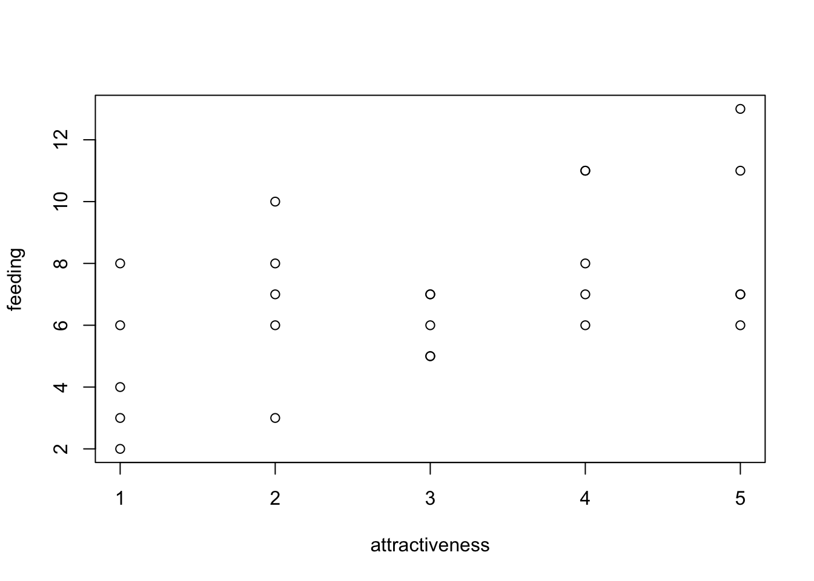
To fit a Poisson regression to this data, we use the glm() function, specifying family = “poisson”. Note again that the log link function is the default (see ?family), so it does not have to be specified.
fit = glm(feeding ~ attractiveness, data = birdfeeding, family = "poisson")
summary(fit)
Call:
glm(formula = feeding ~ attractiveness, family = "poisson", data = birdfeeding)
Deviance Residuals:
Min 1Q Median 3Q Max
-1.55377 -0.72834 0.03699 0.59093 1.54584
Coefficients:
Estimate Std. Error z value Pr(>|z|)
(Intercept) 1.47459 0.19443 7.584 3.34e-14 ***
attractiveness 0.14794 0.05437 2.721 0.00651 **
---
Signif. codes: 0 '***' 0.001 '**' 0.01 '*' 0.05 '.' 0.1 ' ' 1
(Dispersion parameter for poisson family taken to be 1)
Null deviance: 25.829 on 24 degrees of freedom
Residual deviance: 18.320 on 23 degrees of freedom
AIC: 115.42
Number of Fisher Scoring iterations: 4The output is very similar to the lm(), however, as the residuals are not any more assumed to scatter normally, all statistics based on R2 have been replaced by the deviance (deviance = - 2 log likelihood). So, we have
Deviance residuals on top
Instead of R2, we get null vs. residual deviance, and AIC. Based on the deviance, we can calculate a pseudo R2, e.g. McFadden, which is 1-[LogL(M)/LogL(M0))] -> in this case 1-25.8/18.3
Note
Unfortunately, the deviance is not used consistently in
If we want to calculate model predictions, we have to transform to the response scale. Here we have a log link, i.e. we have to transform with exp(linear response).
exp(1.47459 + 3 * 0.14794)[1] 6.810122Alternatively (and preferably), you can use the predict() function with type = “response”
dat = data.frame(attractiveness = 3)
predict(fit, newdata = dat) # linear predictor 1
1.918397 predict(fit, newdata = dat, type = "response") # response scale 1
6.810034 Effect plots work as before. Note that the effects package always transforms the y axis according to the link, so we have log scaling on the y axis, and the effect lines remain straight
library(effects)Loading required package: carDatalattice theme set by effectsTheme()
See ?effectsTheme for details.plot(allEffects(fit))8.2.1.1 Notes on the Poisson regression
Poisson vs. log transformed count data: For count data, even if the distribution is switched, the log link is nearly always the appropriate link function. Before GLMs were widely available, was common to it lm with log transformed counts, which is basically log link + normal distribution
Log offset: If there is a variable that that controls the number of counts (e.g. time, area), this variable is usually added as a offset in the following form
fit = glm(y ~ x + offset(log(area)), family = "poisson")As the log-link connects the linear predictor as in y = exp(x), and exp(x + log(area)) = exp(x) * area, this makes the expected counts proportional to area, or whatever variable is added as a log offset.
Interactions: As for all GLMs with nonlinear link functions, interpretation of the interactions is more complicated. See notes in this below.
8.2.2 0/1 or k/n data - logistic regression
The standard model to fit binomial (0/1 or k/n) data is the logistic regression, which combines the binomial distribution with a logit link function. To get to know this model, let’s have a look at the titanic data set in EcoData:
library(EcoData)
#str(titanic)
#mosaicplot( ~ survived + sex + pclass, data = titanic)
titanic$pclass = as.factor(titanic$pclass)We want to analyze how survival in the titanic accident depended on other predictors. We could fit an lm, but the residual checks make it very evident that the data with a 0/1 response don’t fit to the assumption of an lm:
fit = lm(survived ~ sex * age, data = titanic)
summary(fit)
Call:
lm(formula = survived ~ sex * age, data = titanic)
Residuals:
Min 1Q Median 3Q Max
-0.8901 -0.2291 -0.1564 0.2612 0.9744
Coefficients:
Estimate Std. Error t value Pr(>|t|)
(Intercept) 0.637645 0.046165 13.812 < 2e-16 ***
sexmale -0.321308 0.059757 -5.377 9.35e-08 ***
age 0.004006 0.001435 2.792 0.00534 **
sexmale:age -0.007641 0.001823 -4.192 3.01e-05 ***
---
Signif. codes: 0 '***' 0.001 '**' 0.01 '*' 0.05 '.' 0.1 ' ' 1
Residual standard error: 0.4115 on 1042 degrees of freedom
(263 observations deleted due to missingness)
Multiple R-squared: 0.3017, Adjusted R-squared: 0.2997
F-statistic: 150 on 3 and 1042 DF, p-value: < 2.2e-16par(mfrow = c(2, 2))
plot(fit)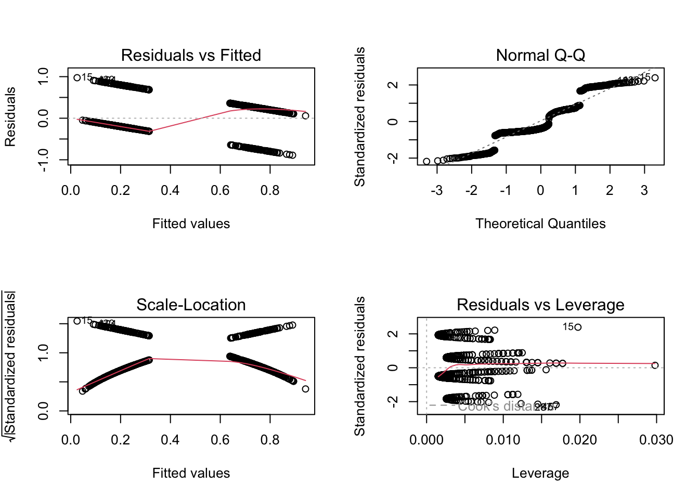
Thus, let’s move to the logistic regression, which assumes a 0/1 response + logit link. In principle, this is distribution is called Bernoulli, but in R both 0/1 and k/n are called “binomial”, as Bernoulli is the special case of binomial where n = 1.
m1 = glm(survived ~ sex*age, family = "binomial", data = titanic)
summary(m1)
Call:
glm(formula = survived ~ sex * age, family = "binomial", data = titanic)
Deviance Residuals:
Min 1Q Median 3Q Max
-2.0247 -0.7158 -0.5776 0.7707 2.2960
Coefficients:
Estimate Std. Error z value Pr(>|z|)
(Intercept) 0.493381 0.254188 1.941 0.052257 .
sexmale -1.154139 0.339337 -3.401 0.000671 ***
age 0.022516 0.008535 2.638 0.008342 **
sexmale:age -0.046276 0.011216 -4.126 3.69e-05 ***
---
Signif. codes: 0 '***' 0.001 '**' 0.01 '*' 0.05 '.' 0.1 ' ' 1
(Dispersion parameter for binomial family taken to be 1)
Null deviance: 1414.6 on 1045 degrees of freedom
Residual deviance: 1083.4 on 1042 degrees of freedom
(263 observations deleted due to missingness)
AIC: 1091.4
Number of Fisher Scoring iterations: 4
Note
The syntax here is for 0/1 data. If you have k/n data, you can either specify the response as cbind(k, n-k), or you can fit the glm with k ~ x, weights = n
The interpretation of the regression table remains unchanged. To transform to predictions, we have to use the inverse logit, which is in R:
plogis(0.493381 + 0.022516 * 20) # Women, age 20.[1] 0.7198466plogis(0.493381 -1.154139 + 20*(0.022516-0.046276)) # Men, age 20[1] 0.2430632Alternatively, we can again use the predict function
newDat = data.frame(sex = as.factor(c("female", "male")), age = c(20,20))
predict(m1, newdata = newDat) # Linear predictor. 1 2
0.9436919 -1.1359580 predict(m1, newdata = newDat, type = "response") # Response scale. 1 2
0.7198448 0.2430633 Finally, the effect plots - note again the scaling of the y axis, which is now logit.
library(effects)
plot(allEffects(m1))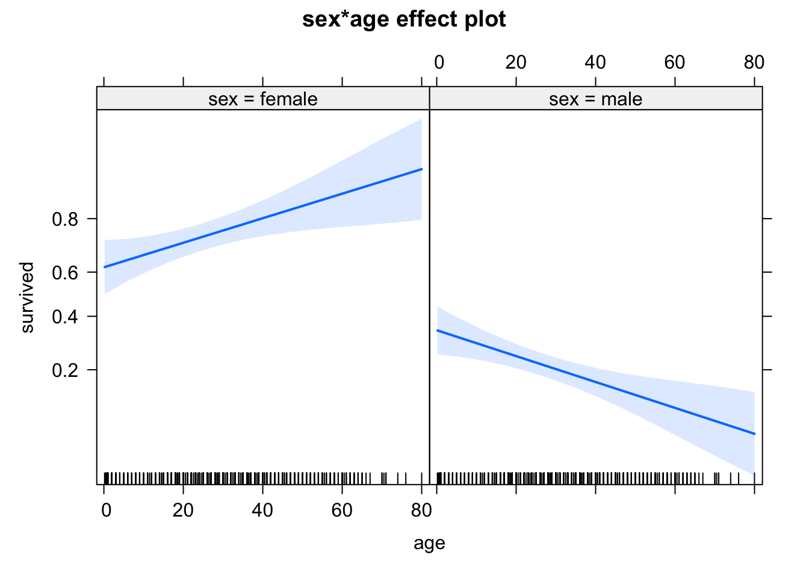
8.2.2.1 Notes on the logistic regression
Offset: there is no exact solution for making 0/1 data dependent on a scaling factor via an offset, which is often desirable, for example in the context of survival analysis with different exposure times. An approximate solution is to use an offset together with the log-log link (instead of logit).
Interactions: As for all GLMs with nonlinear link functions, interpretation of the interactions is more complicated. See notes in this below.
Overdispersion: 0/1 poisson responses cannot be overdispersed, but k/n responses can be. However, 0/1 responses can show overdispersion if grouped to k/n. Note next section on residual checks, as well as comments on testing binomial GLMs in the
DHARMa vignette.
8.3 Residual and their solutions in GLMs
First of all: everything we said about model selection and residual checks for LMs also apply for GLMs, with only very few additions, so you should check your model in principle as before. However, there are a few tweaks you have to be aware of.
Let’s look again at the titanic example
m1 = glm(survived ~ sex*age, family = "binomial", data = titanic)How can we check the residuals of this model? Due to an unfortunate programming choice in R (Nerds: Check class(m1)), the standard residual plots still work
par(mfrow = c(2, 2))
plot(m1)
but they look horrible, because they still check for normality of the residuals, while we are interested in the question of whether the residuals are binomially distributed.
8.3.1 DHARMA residual plots for GL(M)Ms
The DHARMa package that we already introduced solves this problem
library(DHARMa)This is DHARMa 0.4.6. For overview type '?DHARMa'. For recent changes, type news(package = 'DHARMa')res = simulateResiduals(m1)Standard plot:
plot(res)
Out of the help page: The function creates a plot with two panels. The left panel is a uniform Q-Q plot (calling plotQQunif), and the right panel shows residuals against predicted values (calling plotResiduals), with outliers highlighted in red.
Very briefly, we would expect that a correctly specified model shows:
A straight 1-1 line, as well as not significant of the displayed tests in the Q-Q-plot (left) -> Evidence for a correct overall residual distribution (for more details on the interpretation of this plot, see help).
Visual homogeneity of residuals in both vertical and horizontal direction, as well as no significance of quantile tests in the Residual vs. predicted plot (for more details on the interpretation of this plot, see help).
Deviations from these expectations can be interpreted similarly to a linear regression. See the vignette for detailed examples.
With that in mind, we can say that there is nothing special to see here. Also residuals against predictors shows no particular problem:
par(mfrow = c(1, 2))
plotResiduals(m1, form = model.frame(m1)$age)
plotResiduals(m1, form = model.frame(m1)$sex)
However, residuals against the missing predictor pclass show a clear problem:
dataUsed = as.numeric(rownames(model.frame(m1)))
plotResiduals(m1, form = titanic$pclass[dataUsed])
Thus, I should add passenger class to the model
m2 = glm(survived ~ sex*age + pclass, family = "binomial", data = titanic)
summary(m2)
Call:
glm(formula = survived ~ sex * age + pclass, family = "binomial",
data = titanic)
Deviance Residuals:
Min 1Q Median 3Q Max
-2.3844 -0.6721 -0.4063 0.7041 2.5440
Coefficients:
Estimate Std. Error z value Pr(>|z|)
(Intercept) 2.790839 0.362822 7.692 1.45e-14 ***
sexmale -1.029755 0.358593 -2.872 0.00408 **
age -0.004084 0.009461 -0.432 0.66598
pclass2 -1.424582 0.241513 -5.899 3.67e-09 ***
pclass3 -2.388178 0.236380 -10.103 < 2e-16 ***
sexmale:age -0.052891 0.012025 -4.398 1.09e-05 ***
---
Signif. codes: 0 '***' 0.001 '**' 0.01 '*' 0.05 '.' 0.1 ' ' 1
(Dispersion parameter for binomial family taken to be 1)
Null deviance: 1414.62 on 1045 degrees of freedom
Residual deviance: 961.92 on 1040 degrees of freedom
(263 observations deleted due to missingness)
AIC: 973.92
Number of Fisher Scoring iterations: 5plotResiduals(m2, form = model.frame(m2)$pclass)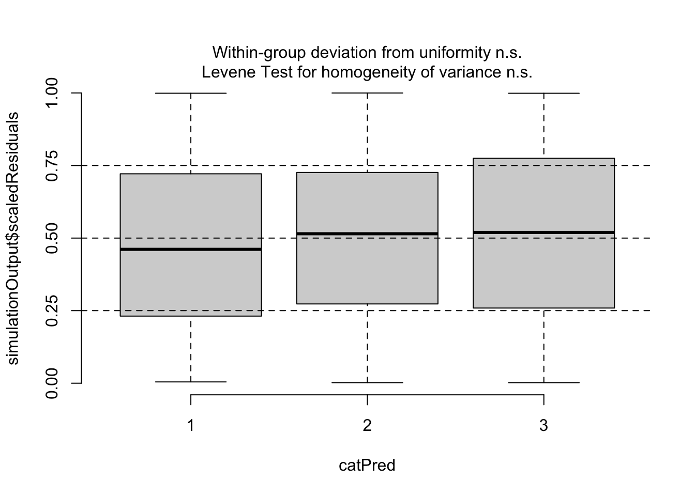
Now, residuals look fine. Of course, if your model gets more complicated, you may want to do additional checks, for example for the distribution of random effects etc.
8.3.2 Dispersion Problems in GLMs
One thing that is different between GLMs and LM is that GLMs can display overall dispersion problems. The most common GLMs to show overdispersion are the Poisson and the logistic regression.
The reason is that simple GLM distributions such as the Poisson or the Binomial (for k/n data) do not have a parameter for adjusting the spread of the observed data around the regression line (dispersion), but their variance is a fixed as function of the mean.
There are good reasons for why this is the case (Poisson and Binomial describe particular processes, e.g. coin flip, for which the variance is a fixed function of the mean), but the fact is that when applying these GLMs on real data, we often find overdispersion (more dispersion than expected), and more rarely, underdispersion (less dispersion than expected).
To remove the assumptions of a fixed dispersion, there are three options, of which you should definitely take the third one:
- Quasi-distributions, which are available in glm. Those add a term to the likelihood that corrects the p-values for the dispersion, but they are not distributions .-> Can’t check residuals, no AIC. -> Discouraged.
- Observation-level random effect (OLRE) - Add a separate random effect per observation. This effectively creates a normal random variate at the level of the linear predictor, increases variance on the responses.
- A GLM distribution with variable dispersion, for Poisson usually the negative binomial.
The reason why we should prefer the 3rd option is that it allows better residual checks and to model the dispersion as a function of the predictors, see next section.
Note
Overdispersion is often created by model misfit. Thus, before moving to a variable dispersion GLM, you should check for / correct model misfit.
8.3.2.1 Recognizing overdispersion
To understand how to recognize overdispersion, let’s look at an example. We’ll use the Salamanders dataset from the package glmmTMB, staring with a simple Poisson glm:
library(glmmTMB)
library(lme4)Loading required package: Matrixlibrary(DHARMa)
m1 = glm(count ~ spp + mined, family = poisson, data = Salamanders)Overdispersion will be automatically highlighted in the standard DHARMa plots
res = simulateResiduals(m1, plot = T)DHARMa:testOutliers with type = binomial may have inflated Type I error rates for integer-valued distributions. To get a more exact result, it is recommended to re-run testOutliers with type = 'bootstrap'. See ?testOutliers for details
You see the dispersion problem by:
Dispersion test in the left plot significant
QQ plot S-shaped
Quantile lines in the right plots outside their expected quantiles
You can get a more detailed output with the testDispersion function, which also displays the direction of the dispersion problem (over or underdispersion)
testDispersion(res)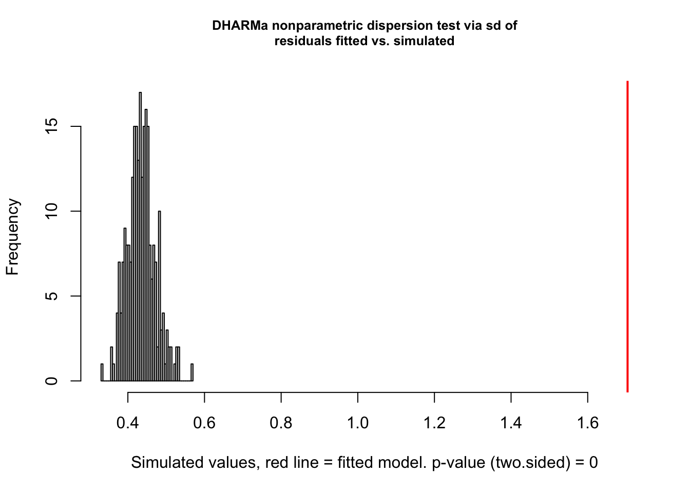
DHARMa nonparametric dispersion test via sd of residuals fitted vs.
simulated
data: simulationOutput
dispersion = 3.9152, p-value < 2.2e-16
alternative hypothesis: two.sidedOK, often the dispersion problem is caused by structural problems. Let’s add a random effect for site, which makes sense.
m2 = glmer(count ~ spp + mined + (1|site),
family = poisson, data = Salamanders)The standard dispersion test is OK
res = simulateResiduals(m2, plot = T)DHARMa:testOutliers with type = binomial may have inflated Type I error rates for integer-valued distributions. To get a more exact result, it is recommended to re-run testOutliers with type = 'bootstrap'. See ?testOutliers for details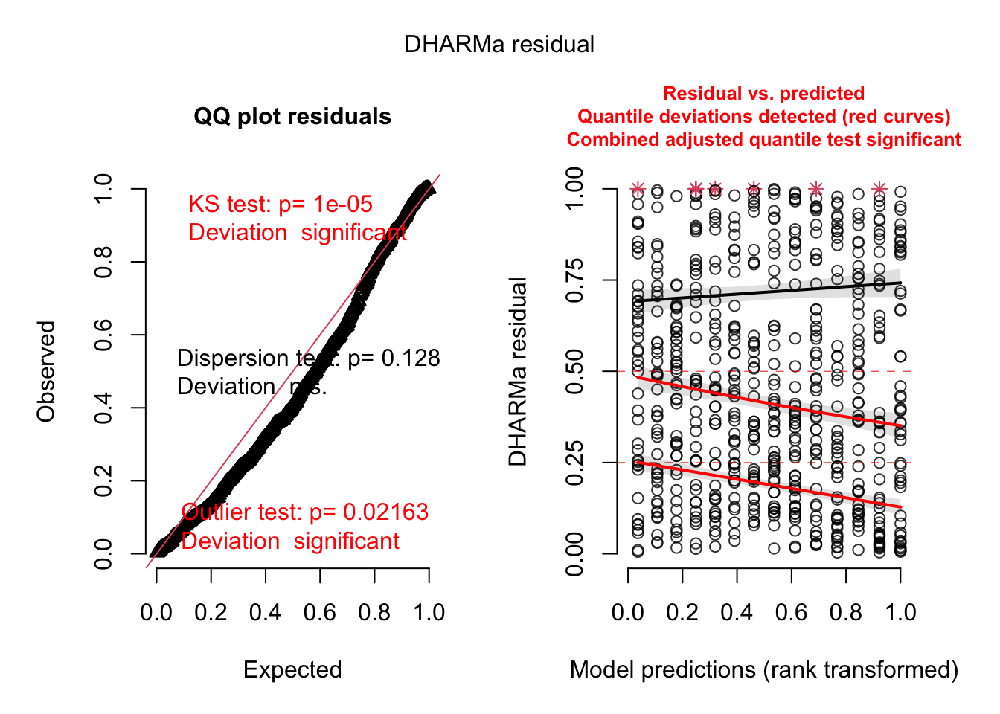
But when random effects are added, you should prefer to calcualte conditional residuals, because this test is more powerful. For lme4 models, we can switch via re.form = T
res = simulateResiduals(m2, plot = T, re.form = NULL)DHARMa:testOutliers with type = binomial may have inflated Type I error rates for integer-valued distributions. To get a more exact result, it is recommended to re-run testOutliers with type = 'bootstrap'. See ?testOutliers for detailsThis test shows that there is still some overdispersion. Actually, what the plots also show is heteroskedasticity, and we should probably deal with that as well, but we will only learn how in the next chapter. For now, let’s switch to a negative binomial model, using glmmTMB
m4 = glmmTMB(count ~ spp + mined + (1|site), family = nbinom2, data = Salamanders)
res = simulateResiduals(m4, plot = T)Unfortunately, glmmTMB doesn’t allow to calculate conditional residuals, so we have to be satisfied with the fact that the unconditional residuals look great.
8.3.3 Zero-inflation
Another common problem in count data (Poisson / negative binomial), but also other GLMs (e.g. binomial, beta) is that the observed data has more zeros than expected by the fitted distribution. For the beta, 1-inflation, and for the k/n binomial, n-inflation is also common, and tested for / addressed in the same way.
To deal with this zero-inflation, one usually adds an additional model component that controls how many zeros are produced. The default way to do this is assuming two separate processes which act after one another:
- First, we have the normal GLM, predicting what values we would expect
- On top of that, we have a logistic regression, which decides whether the GLM prediction or a zero should be observed
Note that the result of 1 can also be zero, so there are two explanations for a zero in the data. Zero-inflated GLMMs can, for example, be fit with glmmTMB, using the ziformula argument.
8.3.3.1 Recognizing zero-inflation
Danger
The fact that you have a lot of zeros in your data does not indicate zero-inflation. Zero-inflation is with respect to the fitted model. You can only check for zero-inflation after fitting a model.
Let’s look at our last model - DHARMa has a special function to check for zero-inflation
testZeroInflation(res)
DHARMa zero-inflation test via comparison to expected zeros with
simulation under H0 = fitted model
data: simulationOutput
ratioObsSim = 1.0172, p-value = 0.744
alternative hypothesis: two.sidedThis shows no sign of zero-inflation. There are, however, two problems with this test:
- glmmTMB models only allow unconditional residuals, which means that dispersion and zero-inflation tests are less powerfull
- When there is really zero-inflation, variable dispersion models such as the negative Binomial often simply increase the dispersion to account for the zeros, leading to no apparent zero-inflation in the residuals, but rather underdispersion.
Thus, for zero-inflation, model selection, or simply fitting a ZIP model is often more reliable than residual checks. You can compare a zero-inflation model via AIC or likelihood ratio test to your base model, or simply check if the ZIP term in glmmTMB is significant.
m5 = glmmTMB(count ~ spp + mined + (1|site), family = nbinom2, ziformula = ~1, data = Salamanders)
summary(m5) Family: nbinom2 ( log )
Formula: count ~ spp + mined + (1 | site)
Zero inflation: ~1
Data: Salamanders
AIC BIC logLik deviance df.resid
1674.4 1723.5 -826.2 1652.4 633
Random effects:
Conditional model:
Groups Name Variance Std.Dev.
site (Intercept) 0.2944 0.5426
Number of obs: 644, groups: site, 23
Dispersion parameter for nbinom2 family (): 0.942
Conditional model:
Estimate Std. Error z value Pr(>|z|)
(Intercept) -1.6832 0.2742 -6.140 8.28e-10 ***
sppPR -1.3197 0.2875 -4.591 4.42e-06 ***
sppDM 0.3686 0.2235 1.649 0.099047 .
sppEC-A -0.7098 0.2530 -2.806 0.005016 **
sppEC-L 0.5714 0.2191 2.608 0.009105 **
sppDES-L 0.7929 0.2166 3.660 0.000252 ***
sppDF 0.3120 0.2329 1.340 0.180329
minedno 2.2633 0.2838 7.975 1.53e-15 ***
---
Signif. codes: 0 '***' 0.001 '**' 0.01 '*' 0.05 '.' 0.1 ' ' 1
Zero-inflation model:
Estimate Std. Error z value Pr(>|z|)
(Intercept) -16.41 4039.11 -0.004 0.997In this case, we have no evidence for zero-inflation. To see an example where you can find zero-inflation, do the Owl case study below.
8.4 Interpreting interactions in GLMs
A significant problem with interpreting GLMs is the interpretation of slopes in the presence of other variables, in particular interactions. To understand this problem, let’s first confirm to ourselves: if we simulate data under the model assumptions, parameters will be recovered as expected.
library(effects)
set.seed(123)
trt = as.factor(sample(c("ctrl", "trt"), 5000, replace= T))
concentration = runif(5000)
response = plogis(0 + 1 * (as.numeric(trt) - 1) + 1*concentration)
survival = rbinom(5000, 1, prob = response)
dat = data.frame(trt = trt,
concentration = concentration,
survival = survival)
m1 = glm(survival ~ trt * concentration, data = dat, family = "binomial")
summary(m1)
Call:
glm(formula = survival ~ trt * concentration, family = "binomial",
data = dat)
Deviance Residuals:
Min 1Q Median 3Q Max
-2.0767 -1.2595 0.6357 0.8578 1.1457
Coefficients:
Estimate Std. Error z value Pr(>|z|)
(Intercept) 0.07491 0.08240 0.909 0.363
trttrt 0.93393 0.12731 7.336 2.20e-13 ***
concentration 0.89385 0.14728 6.069 1.29e-09 ***
trttrt:concentration 0.13378 0.23675 0.565 0.572
---
Signif. codes: 0 '***' 0.001 '**' 0.01 '*' 0.05 '.' 0.1 ' ' 1
(Dispersion parameter for binomial family taken to be 1)
Null deviance: 5920.1 on 4999 degrees of freedom
Residual deviance: 5622.9 on 4996 degrees of freedom
AIC: 5630.9
Number of Fisher Scoring iterations: 4plot(allEffects(m1))
The problem with this, however, is the condition that we “simulate data under model assumptions”, which includes the nonlinear link function. Let’s have a look what happens if we simulate data differently: in this case, we just assume that treatment changes the overall probability of survival (from 45% to 90%), and the concentration increases the survival by up to 10% for each group. We may think that we don’t have an interaction in this case, but the model finds one
response = 0.45 * as.numeric(trt) + 0.1*concentration
survival = rbinom(5000, 1, response)
dat = data.frame(trt = trt,
concentration = concentration,
survival = survival)
m2 = glm(survival ~ trt * concentration,
data = dat, family = "binomial")
summary(m2)
Call:
glm(formula = survival ~ trt * concentration, family = "binomial",
data = dat)
Deviance Residuals:
Min 1Q Median 3Q Max
-2.8600 -1.0714 0.2821 1.0405 1.3101
Coefficients:
Estimate Std. Error z value Pr(>|z|)
(Intercept) -0.30719 0.08142 -3.773 0.000161 ***
trttrt 2.46941 0.18030 13.696 < 2e-16 ***
concentration 0.64074 0.14149 4.529 5.94e-06 ***
trttrt:concentration 1.37625 0.39167 3.514 0.000442 ***
---
Signif. codes: 0 '***' 0.001 '**' 0.01 '*' 0.05 '.' 0.1 ' ' 1
(Dispersion parameter for binomial family taken to be 1)
Null deviance: 5848.4 on 4999 degrees of freedom
Residual deviance: 4355.1 on 4996 degrees of freedom
AIC: 4363.1
Number of Fisher Scoring iterations: 6plot(allEffects(m2))
It looks in the effect plots as if the slope is changing as well, but note that this because the effect plots scale the y axis according to the link - absolutely, the effect of concentration is 10% for both groups.
The reason is simple: if we plot the plogis function, it becomes obvious that at different base levels (which would be controlled by trt in our case), moving a unit in concentration has a different effect.
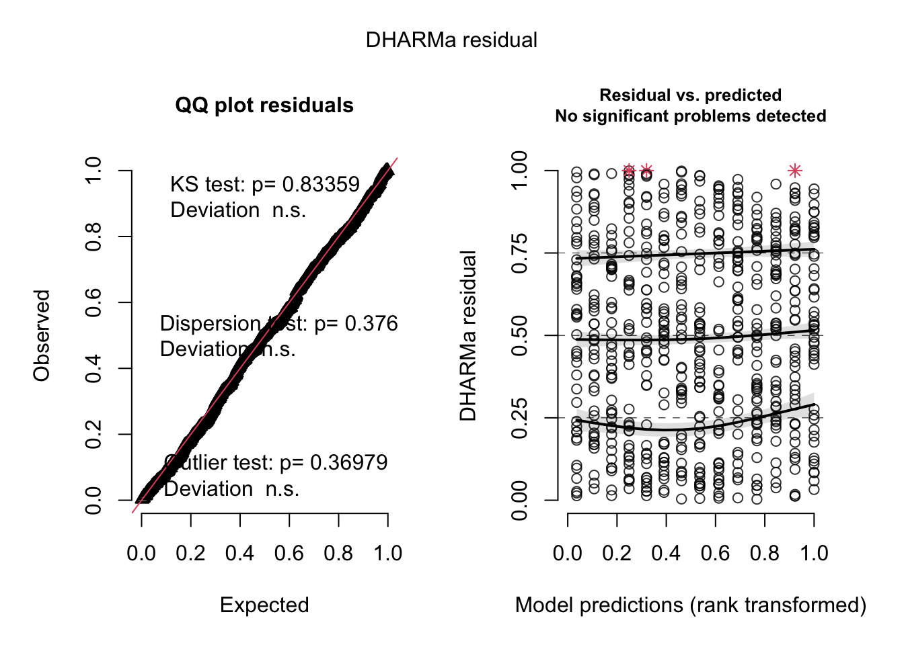
If we turn this around, this means that if want the model to have the same effect of concentration at the response scale for both treatments, we must implement an interaction.
Whether this is a feature or a bug of GLMs depends a bit on the viewpoint. One could argue that, looking at survival, for example, it doesn’t make sense that the concentration should have an effect of absolute 10% on top of the baseline created by trt for either 45% and 90% survival, and if we see such an effect, we should interpret this as an interaction, because relatively speaking, and increase of 45% to 55% is less important than an increase of 90% to 100%.
Still, this also means that main effects and interactions can change if you change the link function, and default links are not always natural from a biological viewpoint. So, for example, we could fit the last model with a binomial distribution, but with an identity link
m3 = glm(survival ~ trt * concentration,
data = dat, family = binomial(link = "identity"))Warning: step size truncated: out of bounds
Warning: step size truncated: out of bounds
Warning: step size truncated: out of bounds
Warning: step size truncated: out of bounds
Warning: step size truncated: out of bounds
Warning: step size truncated: out of bounds
Warning: step size truncated: out of bounds
Warning: step size truncated: out of bounds
Warning: step size truncated: out of bounds
Warning: step size truncated: out of bounds
Warning: step size truncated: out of boundsWarning: glm.fit: algorithm stopped at boundary valuesummary(m3)
Call:
glm(formula = survival ~ trt * concentration, family = binomial(link = "identity"),
data = dat)
Deviance Residuals:
Min 1Q Median 3Q Max
-3.2649 -1.0716 0.3023 1.0398 1.3103
Coefficients:
Estimate Std. Error z value Pr(>|z|)
(Intercept) 0.42369 0.02010 21.079 < 2e-16 ***
trttrt 0.48388 0.02174 22.254 < 2e-16 ***
concentration 0.15935 0.03483 4.575 4.77e-06 ***
trttrt:concentration -0.06690 0.03582 -1.868 0.0618 .
---
Signif. codes: 0 '***' 0.001 '**' 0.01 '*' 0.05 '.' 0.1 ' ' 1
(Dispersion parameter for binomial family taken to be 1)
Null deviance: 5848.4 on 4999 degrees of freedom
Residual deviance: 4347.2 on 4996 degrees of freedom
AIC: 4355.2
Number of Fisher Scoring iterations: 12plot(allEffects(m3))
To solve this problem, there are a number of glm-specific solutions, for example for the logistic regression to prefer the so-called odds ratios. Another option is to look at the predicted effects at the response scale, e.g. via the effect plots, and interpret from there if we have an interaction according to what you would define as one biologically.
Note
If effect directions change in sign, they will do so under any link function (as they are always monotonous), so changes in effect direction are robust to this problem.
8.5 Case Studies
Strategy for analysis:
- Define formula via scientific questions + confounders.
- Define type of GLM (lm, logistic, Poisson).
- Blocks in data -> Random effects, start with random intercept.
Fit this base model, then do residual checks for
- Wrong functional form -> Change fitted function.
- Wrong distribution-> Transformation or GLM adjustment.
- (Over)dispersion -> Variable dispersion GLM.
- Heteroskedasticity -> Model dispersion.
- Zero-inflation -> Add ZIP term.
- …
And adjust the model accordingly.
8.5.1 Hurricanes
In https://www.pnas.org/content/111/24/8782, Jung et al. claim that “Female hurricanes are deadlier than male hurricanes”.
Specifically, they analyze the number of hurricane fatalities, and claim that there is an effect of the femininity of the name on the number of fatalities, correcting for several possible confounders. They interpret the result as causal (including mediators), claiming that giving only male names to hurricanes would considerably reduce death toll.
The data is available in DHARMa.
library(DHARMa)
library(mgcv)
str(hurricanes)tibble [92 × 14] (S3: tbl_df/tbl/data.frame)
$ Year : num [1:92] 1950 1950 1952 1953 1953 ...
$ Name : chr [1:92] "Easy" "King" "Able" "Barbara" ...
$ MasFem : num [1:92] 6.78 1.39 3.83 9.83 8.33 ...
$ MinPressure_before : num [1:92] 958 955 985 987 985 960 954 938 962 987 ...
$ Minpressure_Updated_2014: num [1:92] 960 955 985 987 985 960 954 938 962 987 ...
$ Gender_MF : num [1:92] 1 0 0 1 1 1 1 1 1 1 ...
$ Category : num [1:92] 3 3 1 1 1 3 3 4 3 1 ...
$ alldeaths : num [1:92] 2 4 3 1 0 60 20 20 0 200 ...
$ NDAM : num [1:92] 1590 5350 150 58 15 ...
$ Elapsed_Yrs : num [1:92] 63 63 61 60 60 59 59 59 58 58 ...
$ Source : chr [1:92] "MWR" "MWR" "MWR" "MWR" ...
$ ZMasFem : num [1:92] -0.000935 -1.670758 -0.913313 0.945871 0.481075 ...
$ ZMinPressure_A : num [1:92] -0.356 -0.511 1.038 1.141 1.038 ...
$ ZNDAM : num [1:92] -0.439 -0.148 -0.55 -0.558 -0.561 ...Some plots:
plot(hurricanes$MasFem, hurricanes$NDAM, cex = 0.5, pch = 5)
points(hurricanes$MasFem, hurricanes$NDAM, cex = hurricanes$alldeaths/20,
pch = 4, col= "red")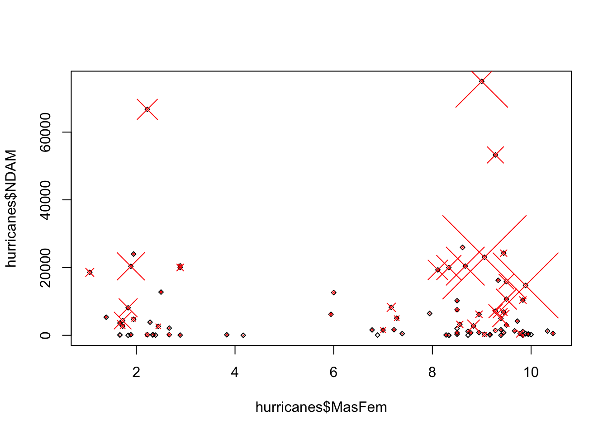
The original model from the paper fits a negative binomial, using mgcv.{R}.
originalModelGAM = gam(alldeaths ~ MasFem * (Minpressure_Updated_2014 + NDAM),
data = hurricanes, family = nb, na.action = "na.fail")
summary(originalModelGAM)
Family: Negative Binomial(0.736)
Link function: log
Formula:
alldeaths ~ MasFem * (Minpressure_Updated_2014 + NDAM)
Parametric coefficients:
Estimate Std. Error z value Pr(>|z|)
(Intercept) 7.014e+01 2.003e+01 3.502 0.000462 ***
MasFem -5.986e+00 2.529e+00 -2.367 0.017927 *
Minpressure_Updated_2014 -7.008e-02 2.060e-02 -3.402 0.000669 ***
NDAM -3.845e-05 2.945e-05 -1.305 0.191735
MasFem:Minpressure_Updated_2014 6.124e-03 2.603e-03 2.352 0.018656 *
MasFem:NDAM 1.593e-05 3.756e-06 4.242 2.21e-05 ***
---
Signif. codes: 0 '***' 0.001 '**' 0.01 '*' 0.05 '.' 0.1 ' ' 1
R-sq.(adj) = -3.61e+03 Deviance explained = 57.4%
-REML = 357.56 Scale est. = 1 n = 92Tasks:
- Confirm that you get the same results as in the paper.
- Have a look at the ?hurricanes to see a residual analysis of the model in the paper
- Forget what they did. Go back to start, do a causal analysis like we did, and do your own model, diagnosing all residual problems that we discussed. Do you think there is an effect of femininity?
::: {.callout-tip collapse=“true” appearance=“minimal” icon=“false”} #### Solution
library(DHARMa)
?hurricanes
# this is the model fit by Jung et al., fith with glmmTMB
library(glmmTMB)
originalModelGAM = glmmTMB(alldeaths ~ MasFem*
(Minpressure_Updated_2014 + scale(NDAM)),
data = hurricanes, family = nbinom2)
summary(originalModelGAM) Family: nbinom2 ( log )
Formula: alldeaths ~ MasFem * (Minpressure_Updated_2014 + scale(NDAM))
Data: hurricanes
AIC BIC logLik deviance df.resid
660.7 678.4 -323.4 646.7 85
Dispersion parameter for nbinom2 family (): 0.787
Conditional model:
Estimate Std. Error z value Pr(>|z|)
(Intercept) 69.661590 23.425598 2.974 0.002942 **
MasFem -5.855078 2.716589 -2.155 0.031138 *
Minpressure_Updated_2014 -0.069870 0.024251 -2.881 0.003964 **
scale(NDAM) -0.494094 0.455968 -1.084 0.278536
MasFem:Minpressure_Updated_2014 0.006108 0.002813 2.171 0.029901 *
MasFem:scale(NDAM) 0.205418 0.061956 3.316 0.000915 ***
---
Signif. codes: 0 '***' 0.001 '**' 0.01 '*' 0.05 '.' 0.1 ' ' 1# note that in the code that I gave you not all predictors were scaled,
# but for looking at the main effect we should scale
originalModelGAM = glmmTMB(alldeaths ~ scale(MasFem) *
(scale(Minpressure_Updated_2014) + scale(NDAM)),
data = hurricanes, family = nbinom2)
summary(originalModelGAM) Family: nbinom2 ( log )
Formula:
alldeaths ~ scale(MasFem) * (scale(Minpressure_Updated_2014) +
scale(NDAM))
Data: hurricanes
AIC BIC logLik deviance df.resid
660.7 678.4 -323.4 646.7 85
Dispersion parameter for nbinom2 family (): 0.787
Conditional model:
Estimate Std. Error z value
(Intercept) 2.5034 0.1231 20.341
scale(MasFem) 0.1237 0.1210 1.022
scale(Minpressure_Updated_2014) -0.5425 0.1603 -3.384
scale(NDAM) 0.8988 0.2190 4.105
scale(MasFem):scale(Minpressure_Updated_2014) 0.3758 0.1731 2.171
scale(MasFem):scale(NDAM) 0.6629 0.1999 3.316
Pr(>|z|)
(Intercept) < 2e-16 ***
scale(MasFem) 0.306923
scale(Minpressure_Updated_2014) 0.000715 ***
scale(NDAM) 4.05e-05 ***
scale(MasFem):scale(Minpressure_Updated_2014) 0.029901 *
scale(MasFem):scale(NDAM) 0.000915 ***
---
Signif. codes: 0 '***' 0.001 '**' 0.01 '*' 0.05 '.' 0.1 ' ' 1# now main effect is n.s.; it's a bit dodgy, but if you read in the main paper
# they actually argue mainly via ANOVA and significance at high values of NDAM
car::Anova(originalModelGAM)Analysis of Deviance Table (Type II Wald chisquare tests)
Response: alldeaths
Chisq Df Pr(>Chisq)
scale(MasFem) 1.9495 1 0.1626364
scale(Minpressure_Updated_2014) 7.1285 1 0.0075868 **
scale(NDAM) 14.6100 1 0.0001322 ***
scale(MasFem):scale(Minpressure_Updated_2014) 4.7150 1 0.0299011 *
scale(MasFem):scale(NDAM) 10.9929 1 0.0009146 ***
---
Signif. codes: 0 '***' 0.001 '**' 0.01 '*' 0.05 '.' 0.1 ' ' 1# in the ANOVA we see that MasFem still n.s. but interactions, and if you
# would calculate effect of MasFem at high NDAM, it is significnat. Something
# like that is argued in the paper. We can emulate this by changing
# NDAM centering to high NDAM
hurricanes$highcenteredNDAM = hurricanes$NDAM - max(hurricanes$NDAM)
originalModelGAM = glmmTMB(alldeaths ~ scale(MasFem) *
(scale(Minpressure_Updated_2014) + highcenteredNDAM),
data = hurricanes, family = nbinom2)
summary(originalModelGAM) Family: nbinom2 ( log )
Formula:
alldeaths ~ scale(MasFem) * (scale(Minpressure_Updated_2014) +
highcenteredNDAM)
Data: hurricanes
AIC BIC logLik deviance df.resid
660.7 678.4 -323.4 646.7 85
Dispersion parameter for nbinom2 family (): 0.787
Conditional model:
Estimate Std. Error z value
(Intercept) 7.210e+00 1.149e+00 6.275
scale(MasFem) 3.595e+00 1.041e+00 3.455
scale(Minpressure_Updated_2014) -5.425e-01 1.603e-01 -3.384
highcenteredNDAM 6.949e-05 1.693e-05 4.105
scale(MasFem):scale(Minpressure_Updated_2014) 3.758e-01 1.731e-01 2.171
scale(MasFem):highcenteredNDAM 5.125e-05 1.546e-05 3.316
Pr(>|z|)
(Intercept) 3.50e-10 ***
scale(MasFem) 0.000551 ***
scale(Minpressure_Updated_2014) 0.000715 ***
highcenteredNDAM 4.05e-05 ***
scale(MasFem):scale(Minpressure_Updated_2014) 0.029904 *
scale(MasFem):highcenteredNDAM 0.000915 ***
---
Signif. codes: 0 '***' 0.001 '**' 0.01 '*' 0.05 '.' 0.1 ' ' 1# OK, let's look at the residuals
# no significant deviation in the general DHARMa plot
res <- simulateResiduals(originalModelGAM)
plot(res)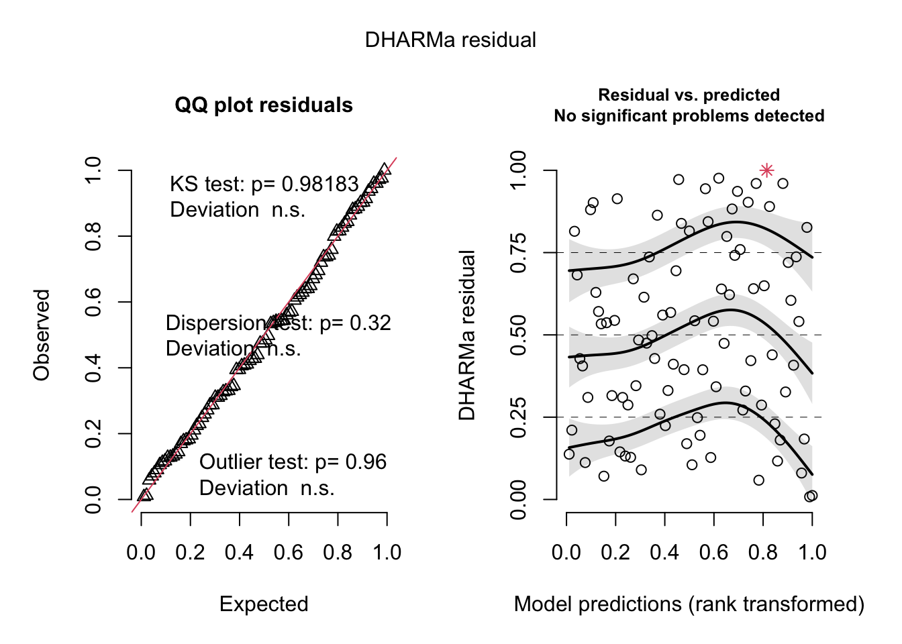
# but residuals ~ NDAM looks funny, which was pointed
# out by Bob O'Hara in a blog post after publication of the paper
plotResiduals(res, hurricanes$NDAM)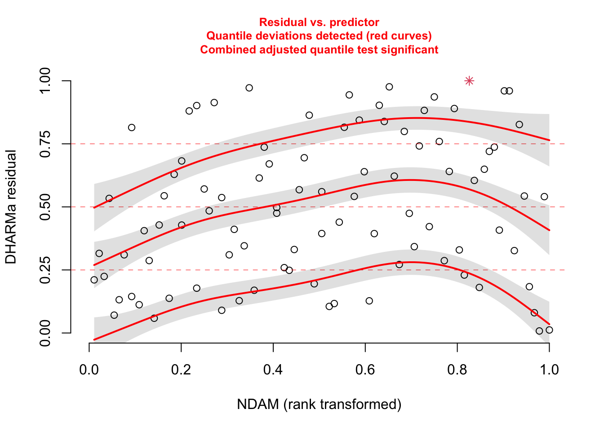
# correcting with a sqrt effect
correctedModel = glmmTMB(alldeaths ~ scale(MasFem) *
(scale(Minpressure_Updated_2014) + scale(NDAM) + sqrt(NDAM)),
data = hurricanes, family = nbinom2)
res <- simulateResiduals(correctedModel, plot = T)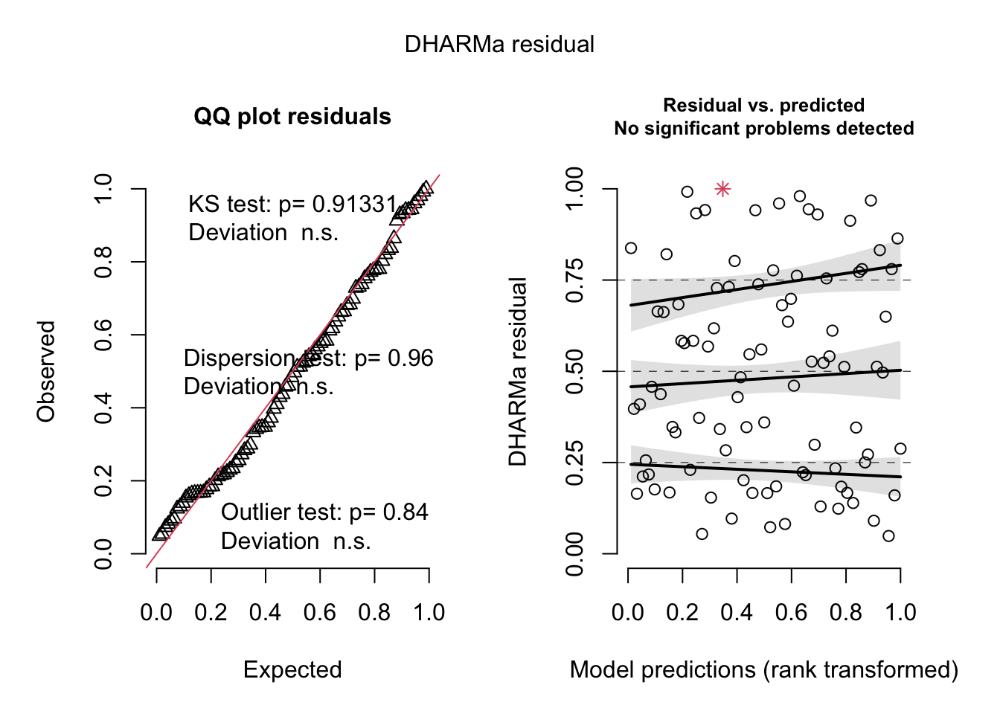
plotResiduals(res, hurricanes$NDAM)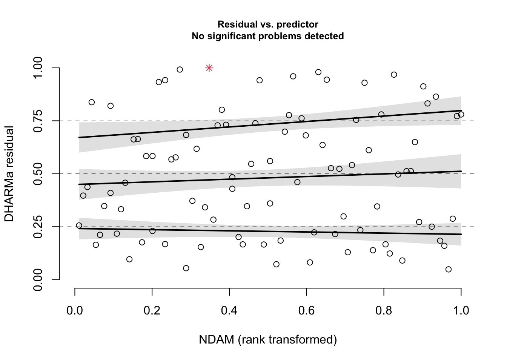
summary(correctedModel) Family: nbinom2 ( log )
Formula:
alldeaths ~ scale(MasFem) * (scale(Minpressure_Updated_2014) +
scale(NDAM) + sqrt(NDAM))
Data: hurricanes
AIC BIC logLik deviance df.resid
634.9 657.6 -308.4 616.9 83
Dispersion parameter for nbinom2 family (): 1.12
Conditional model:
Estimate Std. Error z value
(Intercept) 0.050105 0.416199 0.120
scale(MasFem) -0.292769 0.421372 -0.695
scale(Minpressure_Updated_2014) -0.142669 0.178176 -0.801
scale(NDAM) -1.111040 0.282769 -3.929
sqrt(NDAM) 0.035901 0.006239 5.754
scale(MasFem):scale(Minpressure_Updated_2014) 0.073706 0.196301 0.375
scale(MasFem):scale(NDAM) -0.101584 0.273675 -0.371
scale(MasFem):sqrt(NDAM) 0.005614 0.006257 0.897
Pr(>|z|)
(Intercept) 0.904
scale(MasFem) 0.487
scale(Minpressure_Updated_2014) 0.423
scale(NDAM) 8.52e-05 ***
sqrt(NDAM) 8.70e-09 ***
scale(MasFem):scale(Minpressure_Updated_2014) 0.707
scale(MasFem):scale(NDAM) 0.711
scale(MasFem):sqrt(NDAM) 0.370
---
Signif. codes: 0 '***' 0.001 '**' 0.01 '*' 0.05 '.' 0.1 ' ' 1car::Anova(correctedModel)Analysis of Deviance Table (Type II Wald chisquare tests)
Response: alldeaths
Chisq Df Pr(>Chisq)
scale(MasFem) 0.7138 1 0.3982
scale(Minpressure_Updated_2014) 0.5365 1 0.4639
scale(NDAM) 15.6461 1 7.637e-05 ***
sqrt(NDAM) 41.4613 1 1.202e-10 ***
scale(MasFem):scale(Minpressure_Updated_2014) 0.1410 1 0.7073
scale(MasFem):scale(NDAM) 0.1378 1 0.7105
scale(MasFem):sqrt(NDAM) 0.8051 1 0.3696
---
Signif. codes: 0 '***' 0.001 '**' 0.01 '*' 0.05 '.' 0.1 ' ' 1# all gone, only Damage is doing the effect. This wouldn't change with re-scaling probably, as interactions are n.s.
# Moreover, question why they fitted this weird interactions in the first place. A initial model based on a causa analysis could be:
newModel = glmmTMB(alldeaths ~ scale(MasFem) + Minpressure_Updated_2014
+ NDAM + sqrt(NDAM) + Year,
data = hurricanes, family = nbinom2)
summary(newModel) Family: nbinom2 ( log )
Formula:
alldeaths ~ scale(MasFem) + Minpressure_Updated_2014 + NDAM +
sqrt(NDAM) + Year
Data: hurricanes
AIC BIC logLik deviance df.resid
633.4 651.0 -309.7 619.4 85
Dispersion parameter for nbinom2 family (): 1.08
Conditional model:
Estimate Std. Error z value Pr(>|z|)
(Intercept) -2.666e+00 1.506e+01 -0.177 0.860
scale(MasFem) 1.008e-01 1.207e-01 0.835 0.404
Minpressure_Updated_2014 -2.431e-03 6.794e-03 -0.358 0.721
NDAM -9.132e-05 2.163e-05 -4.222 2.42e-05 ***
sqrt(NDAM) 3.838e-02 5.567e-03 6.894 5.44e-12 ***
Year 2.812e-03 6.398e-03 0.440 0.660
---
Signif. codes: 0 '***' 0.001 '**' 0.01 '*' 0.05 '.' 0.1 ' ' 1car::Anova(newModel) # nothing regarding MasFemAnalysis of Deviance Table (Type II Wald chisquare tests)
Response: alldeaths
Chisq Df Pr(>Chisq)
scale(MasFem) 0.6973 1 0.4037
Minpressure_Updated_2014 0.1280 1 0.7205
NDAM 17.8262 1 2.42e-05 ***
sqrt(NDAM) 47.5217 1 5.44e-12 ***
Year 0.1932 1 0.6603
---
Signif. codes: 0 '***' 0.001 '**' 0.01 '*' 0.05 '.' 0.1 ' ' 18.5.2 Researchers Degrees of Freedom — Skin Color and Red Cards
In 2018 Silberzahn et al. published a “meta analysis” in Advances in Methods and Practices in Psychological Science, where they had provided 29 teams with the same data set to answer one research question: “[W]hether soccer players with dark skin tone are more likely than those with light skin tone to receive red cards from referees”.
Spoiler: They found that the “[a]nalytic approaches varied widely across the teams, and the estimated effect sizes ranged from 0.89 to 2.93 (Mdn = 1.31) in odds-ratio units”, highlighting that different approaches in data analysis can yield significant variation in the results.
You can find the paper “Many Analysts, One Data Set: Making Transparent How Variations in Analytic Choices Affect Results” at: https://journals.sagepub.com/doi/10.1177/2515245917747646.
Task
Do a re-analysis of the data as if you were the 30th team to contribute the results to the meta analysis.
Download the data file “CrowdstormingDataJuly1st.csv” here: https://osf.io/fv8c3/.
Variable explanations are provided in the README: https://osf.io/9yh4x/.
Analyze the data. Given the research question, the selected variables are:
- Response variable: ‘redCards’ (+‘yellowReds’?).
- Multiple variables, potentially accounting for confounding, offsetting, grouping, … are included in the data.
- primary predictors: ‘rater1’, ‘rater2’
- These variables reflect ratings of “two independent raters blind to the research question who, based on their profile photo, categorized players on a 5-point scale ranging from (1) very light skin to (5) very dark skin.
- Make sure that ‘rater1’ and ‘rater2’ are rescaled to the range 0 … 1 as described in the paper (“This variable was rescaled to be bounded by 0 (very light skin) and 1 (very dark skin) prior to the final analysis, to ensure consistency of effect sizes across the teams of analysts. The raw ratings were rescaled to 0, .25, .50, .75, and 1 to create this new scale.”)
Research the concept of odd ratios and convert your effect estimate into this format. Are your results within the range of estimates from the 29 teams in Silberzahn et al. (2018)?
Have a look at the other modelling teams. Do you understand the models they fit?
8.5.3 Ants
The paper available here uses a binomial GLMM to analyze the directional decision taken by ants in a Y-maze. Tasks:
- download the data in the paper
- re-implement the model, based on the description in the paper
- check model assumptions, residuals, and all that. Do you agree with the analysis?
8.5.4 Owls
Look at the Owl data set in the glmmTMB.{R} package. The initial hypothesis is
library(glmmTMB)
m1 = glm(SiblingNegotiation ~ FoodTreatment*SexParent + offset(log(BroodSize)),
data = Owls , family = poisson)
res = simulateResiduals(m1)
plot(res)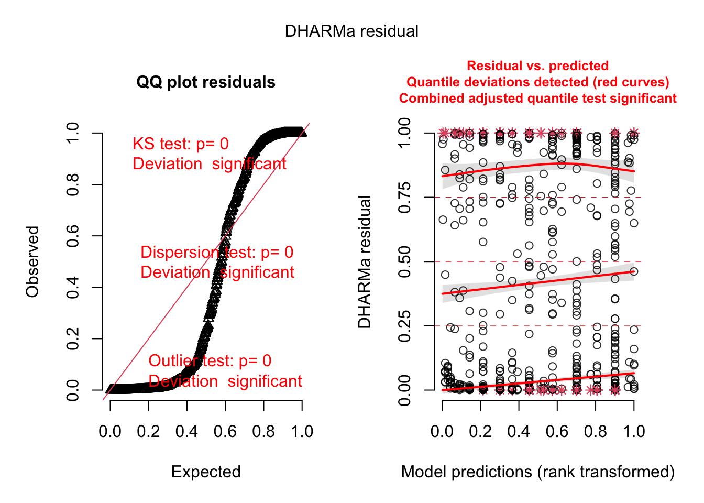
The offset is a special command that can be used in all regression models. It means that we include an effect with effect size 1.
The offset has a special importance in models with a log link function, because with these models, we have y = exp(x …), so if you do y = exp(x + log(BroodSize) ) and use exp rules, this is y = exp(x) * exp(log(BroodSize)) = y = exp(x) * BroodSize, so this makes the response proportional to BroodSize. This trick is often used in log link GLMs to make the response proportional to Area, Sampling effort, etc.
Now, try to improve the model with everything we have discussed so far.